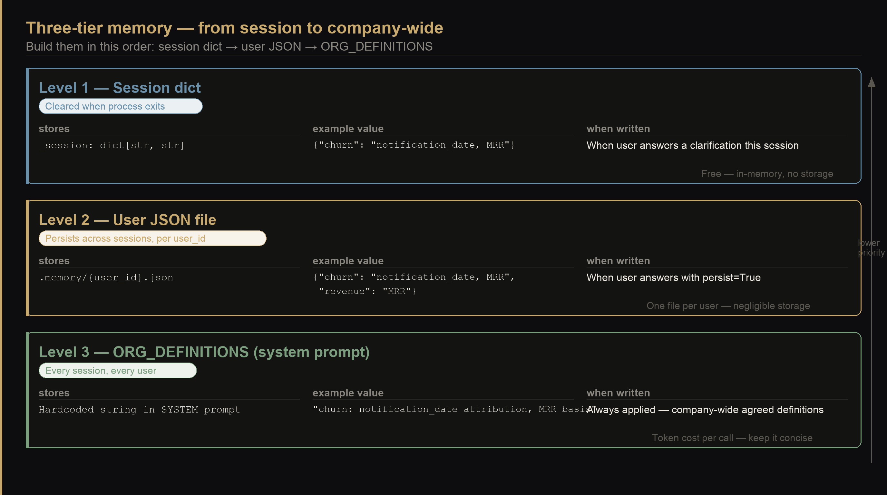

This is Part 2 of Agents on your semantic layer: Part 0 — why they fail · Part 1: build the foundation · Part 2: harden it (this post)
The Part 1 agent answers questions. Ask it "what's our churn rate?" and it returns a number — confidently, without asking which churn definition to use. That number will be plausible and based on whichever interpretation the model inferred from context. Which may not be what your VP meant.
This post adds three layers that close the gap: a pre-flight disambiguation check that catches ambiguous terms before the LLM ever sees them, a template library for common question patterns that skips the reasoning step entirely, and three-tier memory so the agent stops asking the same clarifying question every session.
The three things that will break you
All three are fixable before you touch the agent loop. The first two are pure Python — no LLM calls, no latency, no token cost. The third is a constraint on the template matcher you'll write in Step 6.
Step 5 — The disambiguation pre-flight
Think of this as a spell checker for business terms — except instead of checking spelling, it checks whether a term has multiple valid definitions at your company. Before the agent touches any query, it scans the question for known ambiguous terms and fires a clarifying question if it finds one.
DISAMBIGUATION: dict[str, dict] = {
"churn": {
"question": (
"When you say churn — do you mean attribution to the contract end date "
"or the cancellation notification date? And customer count or MRR?"
),
},
"revenue": {
"question": "Do you need MRR, ARR, or recognized revenue?",
},
"active": {
"question": "Active by subscription status, last login, or last payment date?",
},
}
def check_disambiguation(question: str, resolved: set[str]) -> str | None:
q = question.lower()
for term, cfg in DISAMBIGUATION.items():
if term in q and term not in resolved:
return cfg["question"]
return None
The resolved set tracks which terms have already been clarified this session. Wire it in before the agent loop:
def run_agent(question: str, resolved: set[str] | None = None) -> str:
resolved = resolved or set()
clarification = check_disambiguation(question, resolved)
if clarification:
return f"Before I pull that number — {clarification}"
# ... rest of the loop from Part 1
When the user answers the clarification question, extract the resolved term, add it to resolved, and pass it into the next run_agent call. The check runs in microseconds and adds zero latency to unambiguous questions.
Start with 3–5 terms — the ones your team actually disagrees on. Add more only when a real question slips through without asking. Maintain DISAMBIGUATION like a glossary: if Finance and RevOps don't agree on a definition, the agent shouldn't pick one silently either.
The disambiguation check only catches terms you've explicitly listed. Any ambiguous term you haven't added will still be resolved silently by the model. Check your query log regularly and add anything that appears more than once in the wrong-answer bucket.
Step 6 — The template library
For questions that match a known pattern, templates skip the LLM reasoning step entirely and go straight to a structured execute_metric_query call. Same answer, lower latency, fully deterministic behavior.
Think of templates like macros in a spreadsheet. You write the formula once, parameterize the variable parts, and apply it instantly every time. The LLM's job becomes pattern recognition — "does this question fit a known form?" — rather than reasoning from scratch.
import re
from dataclasses import dataclass
from typing import Callable
@dataclass
class Template:
name: str
pattern: str
build: Callable[[dict], dict]
TEMPLATES: list[Template] = [
Template(
name="period_metric",
pattern=r"what was (?P<metric>.+?) (?:in |for |)(?P<period>last \w+|q[1-4] \d{4}|this \w+)",
build=lambda m: {
"metric_name": m["metric"].strip(),
"dimensions": ["metric_time"],
"filters": [f"metric_time__quarter = '{m['period'].upper()}'"],
},
),
Template(
name="top_n",
pattern=r"which (?P<dim>\w+) had the (?:highest|best|most) (?P<metric>.+)",
build=lambda m: {
"metric_name": m["metric"].strip(),
"dimensions": [m["dim"]],
"limit": 10,
},
),
Template(
name="yoy",
pattern=r"(?P<metric>.+?) (?:vs\.?|versus|compared to) (?:same period |)last year",
build=lambda m: {
"metric_name": m["metric"].strip(),
"dimensions": ["metric_time"],
"filters": [
"metric_time__year IN (YEAR(CURRENT_DATE), YEAR(CURRENT_DATE) - 1)"
],
},
),
]
def match_template(question: str) -> tuple[str | None, dict | None]:
for tmpl in TEMPLATES:
if m := re.search(tmpl.pattern, question.lower()):
return tmpl.name, tmpl.build(m.groupdict())
return None, None
Wire template matching into the agent entry point, after disambiguation:
def run_agent(question: str, resolved: set[str] | None = None) -> str:
resolved = resolved or set()
clarification = check_disambiguation(question, resolved)
if clarification:
return f"Before I pull that number — {clarification}"
tmpl_name, tmpl_args = match_template(question)
if tmpl_name and tmpl_args:
result = execute_metric_query(**tmpl_args)
return f"[template: {tmpl_name}]\n{json.dumps(result, indent=2)}"
# full agent loop for everything else
...
Regex pattern matching is greedy — it will match partial strings and produce wrong variable extractions. Test every template against at least five real questions from your team before deploying. A wrong template applied with confidence is identical to hallucination: correct-looking, wrong result, no error signal.
Step 7 — Three-tier memory
The disambiguation check asked "contract end or notification date?" Once the user answers, the agent should never ask again this session. And once you know a user's preference, ideally never ask again at all.
Like a colleague who remembers your preferences — a good one keeps notes. Session notes cover today. Longer-term notes cover their working relationship with you. And a shared style guide covers conventions the whole team agreed on. Memory in an analytics agent works the same way.
import json
from pathlib import Path
class SessionMemory:
def __init__(self, user_id: str):
self._session: dict[str, str] = {}
self._path = Path(f".memory/{user_id}.json")
self._persistent: dict[str, str] = (
json.loads(self._path.read_text()) if self._path.exists() else {}
)
def get(self, key: str) -> str | None:
return self._session.get(key) or self._persistent.get(key)
def set(self, key: str, value: str, persist: bool = False) -> None:
self._session[key] = value
if persist:
self._persistent[key] = value
self._path.parent.mkdir(exist_ok=True)
self._path.write_text(json.dumps(self._persistent, indent=2))
def resolved_terms(self) -> set[str]:
return set(self._session) | set(self._persistent)
def context_block(self) -> str:
if not self._persistent:
return ""
prefs = "\n".join(f"- {k}: {v}" for k, v in self._persistent.items())
return f"User preferences (apply unless overridden this session):\n{prefs}"

Three tiers:
.memory/. Survives restarts. When a user answers a disambiguation question they've answered before, don't ask — apply it.
The .memory/ directory works fine for internal tools and single-tenant deployments. For multi-tenant or larger-scale deployments, replace the file store with a DB table — the get, set, context_block interface stays the same, and nothing else in the agent changes.
Step 8 — The complete hardened loop
All four additions wired together: disambiguation, template matching, session memory, and proper clarify_or_decline handling.
def run_agent(question: str, user_id: str = "default") -> str:
memory = SessionMemory(user_id)
# Pre-flight 1: disambiguation
clarification = check_disambiguation(question, memory.resolved_terms())
if clarification:
return f"Before I pull that number — {clarification}"
# Pre-flight 2: template match
tmpl_name, tmpl_args = match_template(question)
if tmpl_name and tmpl_args:
result = execute_metric_query(**tmpl_args)
return f"[template: {tmpl_name}]\n{json.dumps(result, indent=2)}"
# Full agent loop for everything else
system = f"{SYSTEM}\n\n{memory.context_block()}"
messages = [{"role": "user", "content": question}]
while True:
response = client.messages.create(
model="claude-opus-4-8",
max_tokens=4096,
system=system,
tools=TOOLS,
messages=messages,
)
if response.stop_reason == "end_turn":
return next(b.text for b in response.content if hasattr(b, "text"))
if response.stop_reason == "tool_use":
messages.append({"role": "assistant", "content": response.content})
tool_results = []
for block in response.content:
if block.type != "tool_use":
continue
if block.name == "clarify_or_decline":
cq = block.input.get("clarifying_question")
return cq if cq else block.input.get("reason", "I need more context.")
tool_results.append({
"type": "tool_result",
"tool_use_id": block.id,
"content": dispatch(block.name, block.input),
})
messages.append({"role": "user", "content": tool_results})
Step 9 — Five tests to run before calling it done
![Five-row test table on dark background. Column headers: Test question, Naive agent result (red), Hardened agent result (green). Row 1: 'What is our churn rate?' — red: returns a number silently — green: 'Before I pull that — notification date or contract end? MRR or customer count?'. Row 2: Same churn question, second session — red: asks again — green: applies saved preference, no question. Row 3: 'What was mrr_monthly last quarter?' — red: invents metric name — green: calls list_metrics, maps to real name. Row 4: 'How does MRR compare to last year?' — red: full LLM reasoning, ~3s — green: template match, instant. Row 5: 'What is our customer lifetime value?' — red: guesses a metric name — green: clarify_or_decline: 'I don't have a CLV metric in the Semantic Layer — do you want to compute it from MRR and churn?'](../assets/posts/semantic-layer-agent-harden/test-results.png)
Five tests to run before your first real deployment
Run all five against your real Semantic Layer before your first user. The first and the last are the ones that cause the most damage in production. The middle three tell you whether the performance optimizations are working.
What you've built
This is the complete setup stack from Part 0 — now implemented:
The code for all seven of these is under 200 lines of Python. The hard part was never the code — it was getting your team to agree on what "churn" means at your company. If you did that work before you started building, the rest is plumbing.
What's the first question at your company that this agent would answer wrong? That's where to start the DISAMBIGUATION dict.
Takeaways
- Pre-flight beats post-flight — check for ambiguity before touching the LLM, not after. The disambiguation pre-flight is deterministic, adds zero latency to clean questions, and catches the most common failure class before any API cost is incurred.
- Templates cover most high-frequency questions — in most analytics orgs, 80% of daily queries fit fewer than 10 patterns. Template those first. Every question handled by a template is instant, deterministic, and free.
- Three tiers of memory, one interface — session dict, user JSON, org definitions. Build them in that order. The
get/set/context_blockinterface stays the same whether the backing store is a dict or a database. - clarify_or_decline needs a schema, not just instructions — giving Claude a typed tool with a strong description is more reliable than telling it in the system prompt to ask when uncertain. The tool is what makes it say no rather than guess.
- Five tests reveal more than unit tests — run the five scenarios above against your real Semantic Layer. Mock tests won't catch wrong metric names, ambiguous dimension selections, or the difference between "user says contract end" and "agent assumed notification date".